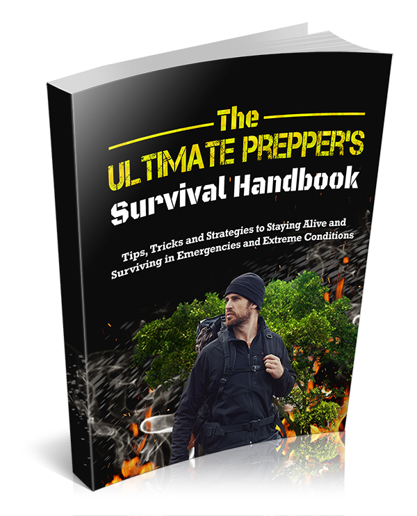

Want To Be Ready For Any Crisis or Emergency?
Date:
From: Your Name
Are you worried about your chances of survival should a natural disaster occur near you? Do you feel like you're not prepared for any sudden emergency?
You know with hurricanes and tsunamis getting more frequent, you should be prepared but it feels like you have no idea where to start. You don't want to be like the rest of the neighbors rushing to the store to buy bottled water... but you're as clueless as them.
Are you tired of searching online for survival or prepper information and it all seems like too much work?
You’re doing your best to prepare for possible disasters but the tasks seem neverending and you’re struggling to make progress.
Do you feel sick and tired of putting in effort and yet, despite you best intentions… this is what you encounter:
You want to get supplies but buying extra stock seems too expensive
Food and water are important but you don't have a clue about storing them
You really want to get experience and knowledge but you want them without the fluff
Here’s a small consolation...YOU are not alone!
Millions of preppers around the world are going through the exact same struggle as you. In fact, with the increase in pandemic outbreakss, natural disasters and acts of terrorism, it's no longer a matter of 'if'... but a matter of when disaster will strike.
Most people just like you want to be ready. They just don’t know where to start or if what they’re doing is even effective.
Well… my struggling friend… It’s time to cast your fears aside.
Becoming an expert survivalist is definitely an attainable goal.
Millions of people who’ve taken the right steps to learn and improve have developed the skills and knowledge to become very capable preppers.
You just need to know what to do. If you’re doing the wrong things such as relying on gadgets instead of skills or not having a plan, you will NOT become a successful prepper.
There is a better way.
You do NOT need to plan for days or live on peas and cardboard during a crisis. You can still eat well and be relatively comfortable in a crisis once you know EXACTLY what you need to do. Your prepping efforts shouldn't feel torturous and in fact, you should feel better and have more peace of mind as you progress in your preparations.
You just need to know what to do in a systematic manner… and it’s all simple stuff.
Prepping and survival is simple to those who have the skills and know-how.
Do you want to know the strategies and techniques the best survival experts and preppers use?
Do you feel like it’s time you gained confidence and knew in your heart that you have what it takes to protect your family?
Do you want to go from clueless noob to survival expert in the shortest possible time?
You do?

The Ultimate Prepper's Survival Handbook
This guide will tell you exactly what you need to know to become an expert prepper and be ready at a moment's notice should things start to go sideways.
Nothing is held back. I’ve given you some of the most powerful and effective survival strategies out there… And most importantly, this is a zero-fluff guide that is specific to your prepping needs!
The average person is busy with career and family commitments. They don't have hours to surf doomsday websites just to learn what's important.
You need a guide that takes into account your challenges and actually helps you by giving you the exact information you're looking for.
"Why You Absolutely Should Get This Book!"
You could pass on this offer and save yourself a few dollars… BUT… What is the real price you’re paying for walking away?
For starters, you’ll continue struggling with your prepping. How long do you want to keep “trying to get ready?”
What happens if disaster strikes while you're still unprepared?
It’s about time you actually got it done and know that you have the skills to survive! This book will smash through all obstacles that you’ve been facing in your survival journey.
You’ll feel proud and confident because you know you can handle the unforseen emergencies that rear their ugly heads. Most importantly, you will feel a sense of achievement and peace of mind that comes from realizing that you're prepared.
You can’t put a price on that!
Just imagine how far you could go by applying my strategies and tips. You already know this guide just might help to save your life… or you would not still be reading.
I want you to succeed… and I know you want success too.
To sweeten the pot and show you that I mean what I say, I’ll give you a huge discount on my guide.
This guide is worth at least $27 because of the fantastic content within… but I won’t ask you to pay that much.
For a very limited time, you can grab “The Ultimate Prepper's Survival Handbook" for the amazingly low price of just...$7.
I know that you’ll love this product because it really works.
I totally believe that this guide will help you.
If you’re not satisfied, I’ll offer you a full-money back guarantee, no questions asked.
|
|
What? Really?
Yes. You can use this product for a full 60 days after your purchase.
In the event that you’re not satisfied with this product you can always contact me for full refund.
Read the book in its entirety and apply it to the letter. You will be amazed at the information within.
You now have in your hands one of the most powerful survival guides for preppers. It’s time you become an expert prepper and get the confidence and skills that you truly deserve.
.
All you need to do to get started on your successful prepping journey will be to get this guide and follow.
With the money-back guarantee, all the risk is on me. You have nothing to lose and everything.
This is an instant download. So, you can get started right now!
"Grab Your Copy Today, Even If It Is 2 A.M. In The Morning!"
I understand that I will:
.
It’s time to have faith and make a decision. Choose to make your prepping goals become a reality. Grab a copy and you’ll not only hone your skills but you’ll transform your entire life.
To Your Success,
Your Name
YourWebsite.com
P.S: You are completely backed by my 60 day money back guarantee. You've got nothing to lose and everything to gain. So grab your copy now!